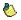
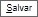

Controle de prazos do SEI
Adicionando prazo a um processo
Abra ou selecione o processo ao qual quer adicionar um prazo, neste caso o processo 0040-00026763/2022-55. Clique no botão "anotação"
.
Caso o processo já contenha uma anotação
 basta clicar nela para edita-la.
Adicione no campo de texto o termo "prazo" e em seguida a data do prazo. Note que que qualquer data escrita antes do termo "prazo" será ignorada.
Obs.: os formatos de data suportados são dd/mm, dd/mm/aa e dd/mm/aaaa.
Agora basta clicar em Salvar

O processo 0040-00026763/2022-55 se encontra agora na tabela Sujeitos a Prazo ao qual possui uma coluna com o numero de dias até o prazo especificado.
Removendo prazo de um processo
Abra ou selecione o processo ao qual quer remover o prazo, neste caso o processo 0040-00026763/2022-55. Clique no botão "anotação"
. Caso o processo já contenha uma anotação
basta clicar nela para edita-la.
No conteúdo da caixa de texto remova a data de prazo e logo após clique em Salvar
Note que agora o processo não se encontra mais na tabela "Sujeitos a Prazo.